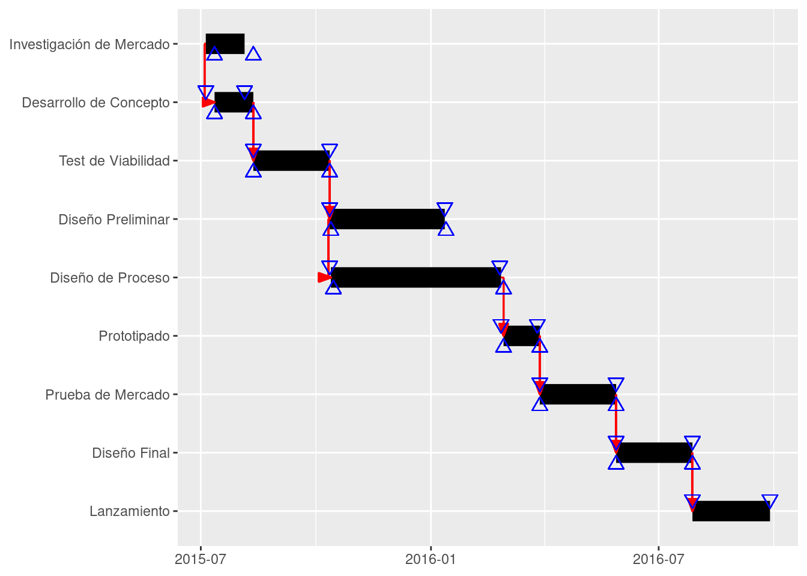

1 Gestión de Proyectos con Analítica de Datos
1Critical Centrality Institute, Monterrey, México
En la gerencia de proyectos una práctica profesional muy aceptada es el uso de herramientas como Microsoft Project. Si Microsoft Project es ampliamente usado en la gerencia de proyectos, ¿Tiene algún sentido buscar otras herramientas? La respuesta corta es un rotundo sí.
1.1 Más allá de los diagramas de Gantt
Cualquier profesional de la gerencia de proyecto reconocerá qué es un diagrama de Gantt y para qué y por qué es muy usado en la gestión de proyectos. Las herramientas especializadas en analítica de datos como R y Python ofrecen paquetes que nos ayudan a visualizar estos diagramas. Veamos un ejemplo sencillo de tareas relacionadas con un proyecto hipotético orientado al lanzamiento de un nuevo producto.
| tarea | start | end |
|---|---|---|
| Investigación de Mercado | 2015-07-05 | 2015-08-05 |
| Desarrollo de Concepto | 2015-07-05 | 2015-08-05 |
| Test de Viabilidad | 2015-08-05 | 2015-10-05 |
| Diseño Preliminar | 2015-10-05 | 2016-01-05 |
| Diseño de Proceso | 2015-10-05 | 2016-02-18 |
| Prototipado | 2016-02-18 | 2016-03-18 |
| Prueba de Mercado | 2016-03-18 | 2016-05-18 |
| Diseño Final | 2016-05-18 | 2016-07-18 |
| Lanzamiento | 2016-07-18 | 2016-09-18 |
Con base en estas tareas y sus correspondientes fechas de inicio (start) y fin (end), podemos visualizar la planificación estimada para este proyecto.

En la gestión de proyectos de alta complejidad (casi siempre orientados a la innovación) varios profesionales contribuyen en diversas partes de un proyecto y ello supone que lo planificado raramente se cumple (debido a fallos en la planificación, la ocurrencia de sucesos inesperados, u otras causas). Además, cuando pensamos en proyectos donde el número de colaboradores supera a los cientos o miles de personas, podemos anticipar que su gestión puede volverse fácilmente un caos de no contar con las herramientas adecuadas.
1.2 Linus Torvalds y el sistema Git
Linud Torvalds fue uno de los pioneros en la gestión de proyectos de alta complejidad al darse cuenta que para desarrollar el kernel del sistema operativo Linux, debía contar con una herramienta de gestión de proyectos que le facilitara a él y sus colaboradores precisar los cientos o miles de cambios diarios asociados al desarrollo del sistema operativo Linux. El sistema de control de versiones Git fue un gran hito en la era de gestión de proyectos de alta complejidad. Esta fue la principal motivación de Linus Torvalds para crear Git
1.3 GitHub, GitLab y BitBucket
GitHub, GitLab y Bitbucket son plataformas de alojamiento de repositorios Git, que son sistemas de control de versiones utilizados para el desarrollo de software. Estas plataformas permiten a los equipos de desarrollo trabajar juntos en proyectos de software, manteniendo un registro de todas las modificaciones realizadas en el código fuente. Las tres herramientas tienen las siguientes semejanzas:
- Repositorios gratuitos: Todas ofrecen repositorios privados y públicos gratuitos para los usuarios.
- Almacenamiento de archivos: Capacidad para almacenar archivos grandes.
- Integración con herramientas de terceros: Permiten la integración con otras herramientas de desarrollo y gestión de proyectos.
- Análisis de proyectos: Proporcionan análisis de proyectos y gráficos de quema de trabajo
GitHub es conocido por su amplia comunidad y una gran cantidad de aplicaciones en su Marketplace, lo que lo hace muy versátil. Sin embargo, no ofrece funcionalidad de integración continua (CI) de forma nativa, requiriendo herramientas de terceros para esta función. GitLab es una plataforma de código abierto que ofrece una amplia gama de funcionalidades, incluyendo CI/CD integrado, lo que lo hace ideal para el ciclo completo de DevOps. GitLab es el único de los tres que es completamente de código abierto, lo que permite a las empresas alojarlo localmente y mantener su código privado. Bitbucket Es parte de la línea de productos de Atlassian y se destaca por su integración nativa con otras herramientas de Atlassian como Jira y Confluence. Aunque ofrece CI/CD, su funcionalidad es más limitada en comparación con GitHub y GitLab. Bitbucket no es completamente de código abierto, aunque ofrece algunas características de código abierto.
Según Gonçalves-Dosantos, García-Jurado y Costa (2020)